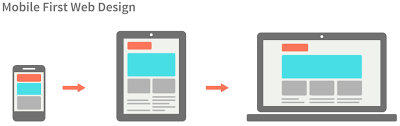
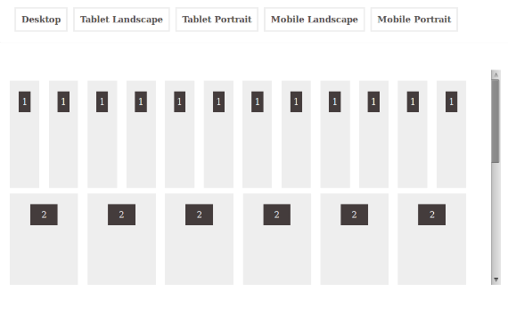

Design Responsivo é uma técnica de estruturação HTML e CSS, que consiste em adaptar o site ao browser do usuário sem que seja necessário definir várias folhas de estilos especíificaspara cada resolução, ou seja, é um tipo de design onde o layout fica fluído e variante de acordo com a resolução do usuário.
O termo design responsivo foi cunhado por Ethan Marcotte em 2010, e descreveu o uso de três técnicas combinadas.
primeira foi a ideia de grids fluidas, que já estava sendo explorada por Gillenwater, e pode ser encontrada no artigo de Marcotte, Fluid Grids (publicado em 2009 em A List Apart).
segunda técnica foi a ideia de imagens fluidas. Usando uma técnica muito simples que setava a propriedade max-width com 100%, as imagens seriam reduzidas se a coluna que as continha se tornasse mais estreita que o tamanho intrínseco da imagem, mas nunca aumentariam. Isso permitiu que uma imagem fosse reduzida em tamanho para caber em uma coluna de tamanho flexível, em vez de transbordar, mas não aumentava e nem tornava-se pixelizada se a coluna fosse mais larga que a imagem.
Bootstrap é um framework front-end que fornece estruturas de CSS para a criação de sites e aplicações responsivas de forma rápida e simples e auxilia na responsividade. Além disso, pode lidar com sites de desktop e páginas de dispositivos móveis da mesma forma.
Originalmente, o Bootstrap foi desenvolvido para o Twitter por um grupo de desenvolvedores liderados por Mark Otto e Jacob Thornton Logo e se tornou uma das estruturas de front-end e projetos de código aberto mais populares do mundo.
Definir um design responsivo é tarefa custosa e muitas vezes envolve vários riscos como a falta de maturidade dos profissionais envolvidos em sua construção, falta de tempo e organização para definir os escopos, falta de conhecimento sobre que tipos de websites receberão aquele estilo, bem como o não entendimento da quantidade de mudanças que esse mesmo site irá sofrer com o decorrer do tempo.